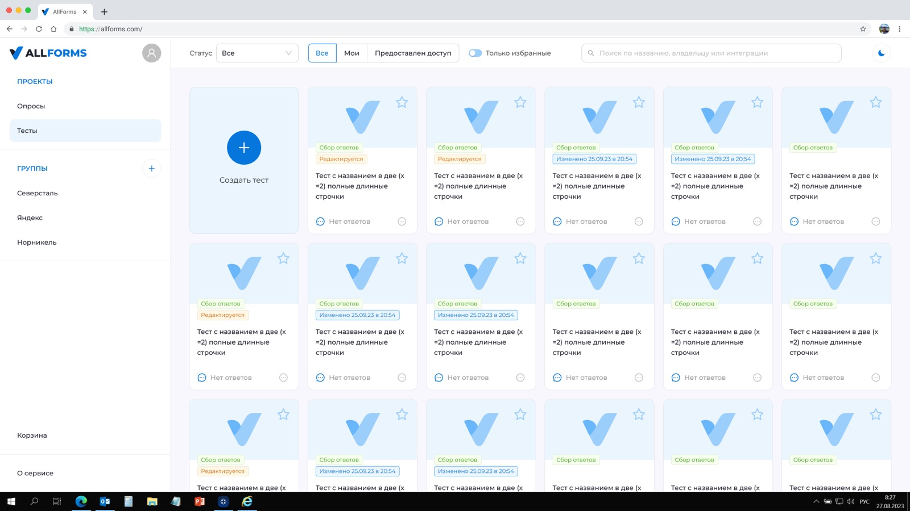

Дискавери до макетов
Закладываю время на исследование, даже если в плане его нет. Новый интерфейс не решит проблему, которая сидит в процессе.
Площадка остатков: 63 интервью и CJM переписали роадмап на 12 месяцев.
Алексей Шуклин · Senior Product Designer
Делаю дизайн для производства и разработчиков: MES «Северстали», торговая площадка холдинга, портал разработчиков Яндекса. Начинаю с интервью, проверяю решения на прототипах, считаю результат. Руководил командой из 2 дизайнеров.
Кейсы
В каждом кейсе: исследование, ход мысли, отвергнутые варианты и то, что я сделал бы иначе.
Сервисом пользуются 11 000+ разработчиков. Тепловая карта и 36 интервью показали, что сценарий начинается не с того экрана.

Переделал интерфейс MES, не останавливая цех и не переучивая 1500+ рабочих.

Платформа опросов заменила Google Forms в холдинге. Фичи выбирал по интервью, а не по громкости запроса.

Покупатели звонили менеджеру вместо покупки на сайте. 63 интервью показали, почему.

Подход
Здесь только то, что я внедрял. К каждому пункту есть кейс.
Закладываю время на исследование, даже если в плане его нет. Новый интерфейс не решит проблему, которая сидит в процессе.
Площадка остатков: 63 интервью и CJM переписали роадмап на 12 месяцев.
Проверяю решения на кликабельных прототипах до разработки: ошибки находят пользователи, а не код в проде.
MES: тесты сценариев с пользователями стали обязательными до разработки. Площадка — 78 юзабилити-тестов до релиза.
Фича попадает в работу после проверки гипотезы на пользователях, а не после самого настойчивого запроса.
Tasklets: 36 интервью и 7 проверенных гипотез определили бэклог.
Фиксирую метрики до изменений и отделяю вклад дизайна от интеграций, маркетинга и сезона.
Площадка: +48% продаж — заслуга перезапуска целиком, поэтому отдельно показываю 2,5 ч → 10 мин на замере с 12 пользователями.
Лидерство
В «Северсталь-инфоком» отвечал за процессы дизайна и исследований всего направления.
интервью и тестовые, затем 1:1 и дизайн-ревью
MES, площадка остатков, AllForms
5 компонентов корпоративной дизайн-системы
для дизайнеров и продактов, 50+ участников
Рост в «Северсталь-инфоком»
Вместе с коллегой перестроил подразделение: плоскую схему подчинения заменили на древовидную. Мы, заместители Head of Design, взяли на себя демо, дейли, ревью, 1:1 и постановку задач — нагрузка на Head of Design снизилась, роли стали чётче. Исследования до проектирования стали обязательным этапом для всего направления.
Formfactor, «Модуль 1»: продуктовые исследования и UI. Pet-проект: сервис анализа статистики YouTube.
7 новых функций портала, редизайн Tasklets для 11 000+ разработчиков, компонент дизайн-системы Gravity.
MES, площадка складских остатков (+48% продаж), AllForms. Нанял и вёл 2 Middle-дизайнеров.
Кабинет автора: −30% времени документооборота. Согласование обложек: передача в производство на 50% быстрее.
600+ книг общим тиражом около 2 млн экземпляров.
Контакты
Подойдут промышленность, логистика, финтех, DevTools и внутренние платформы. Москва: офис, гибрид или удалённо.